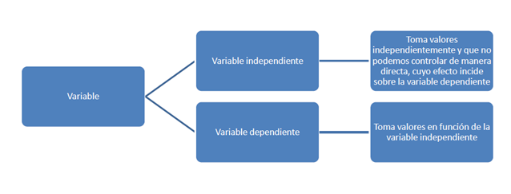

PRIMER BIMESTRE
FUNCIONES
CONCEPTO DE VARIABLE, FUNCIÓN, DOMINIO Y REPRESENTACIÒN DE UNA FUNCIÓN
Variable.- Una variable es un símbolo cualquier que puede representar un valor. Funciòn.- Una función es una correspondencia entre dos conjuntos, dónde a la variable independiente se le asigna un solo valor.